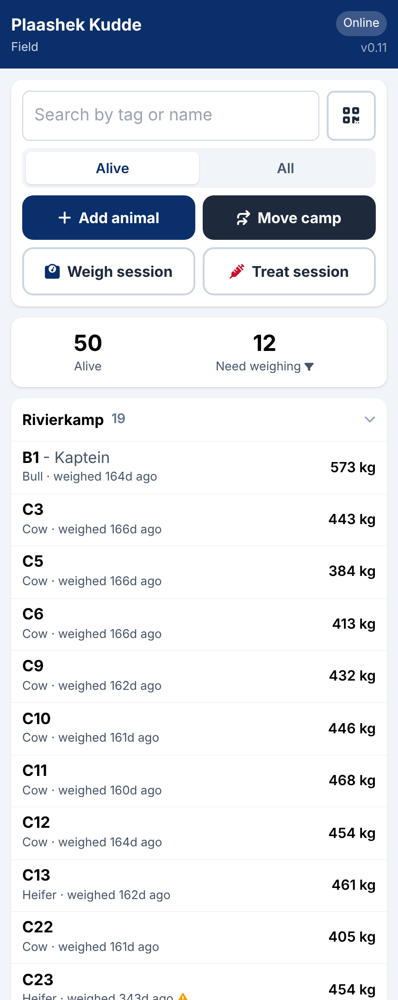
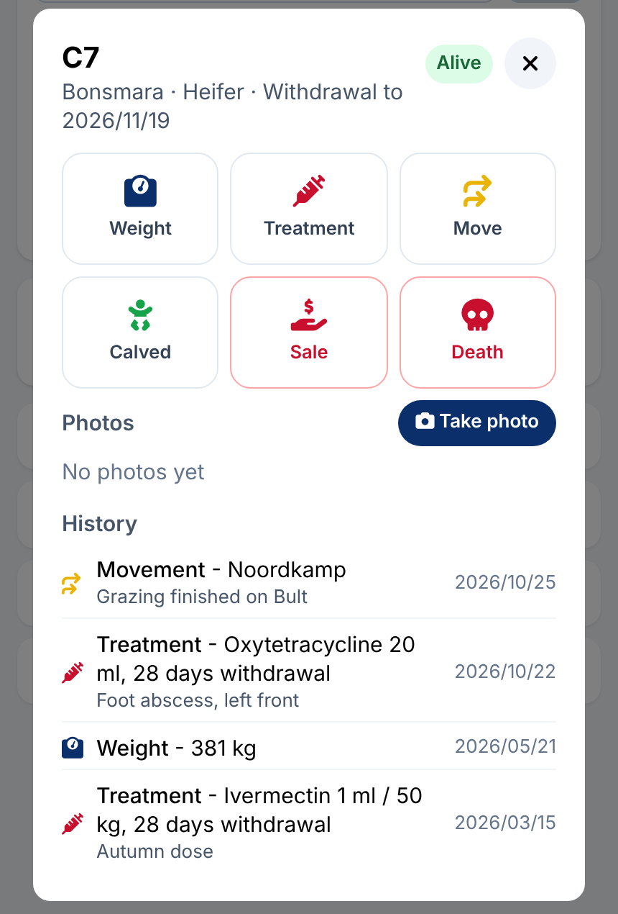
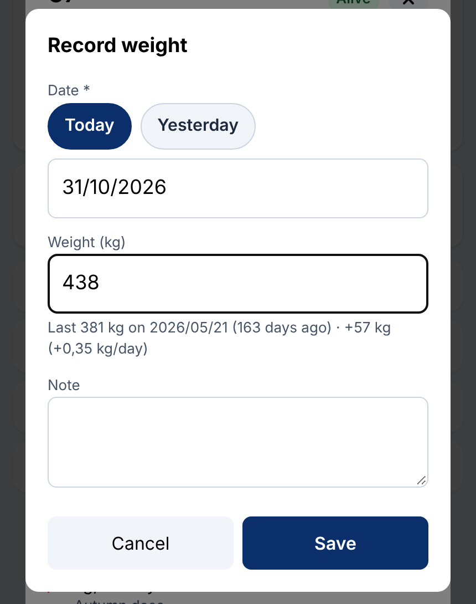
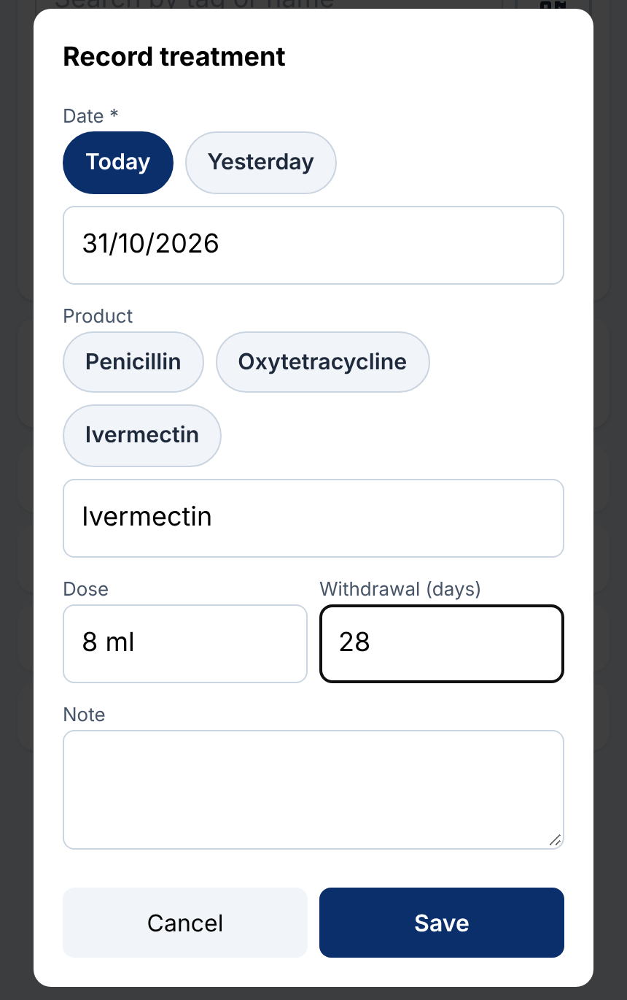
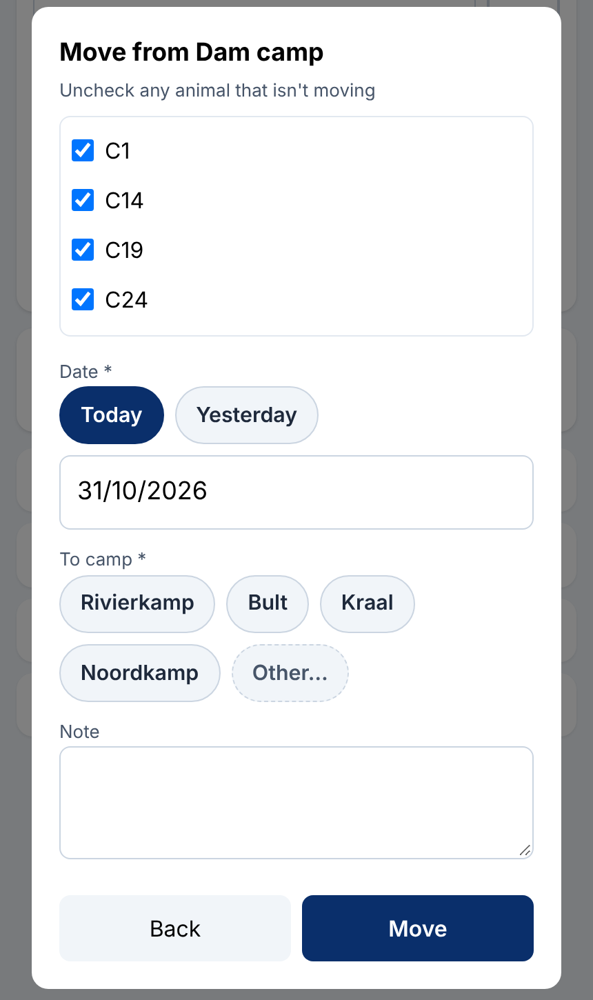
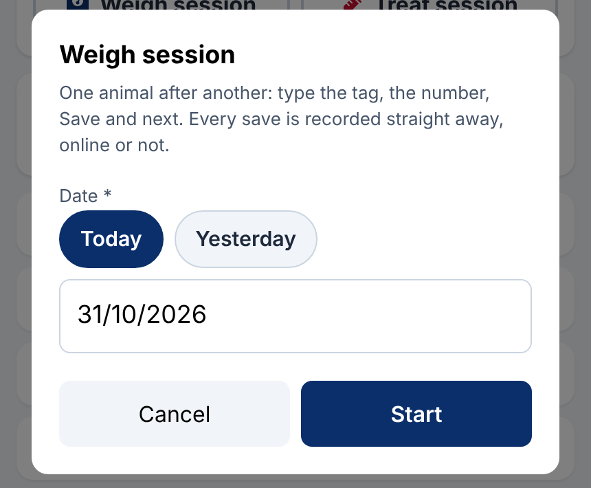
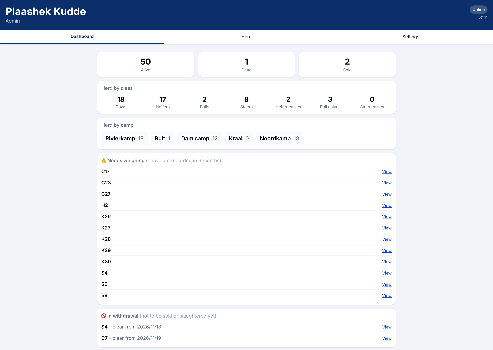
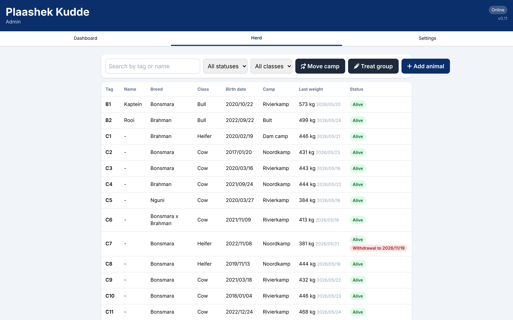
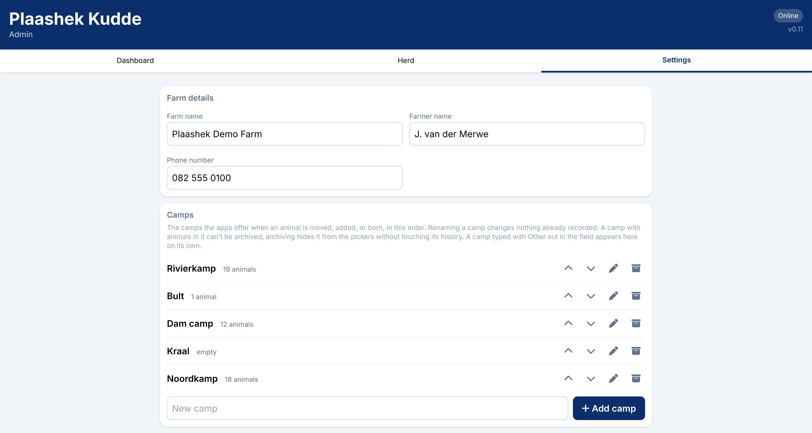
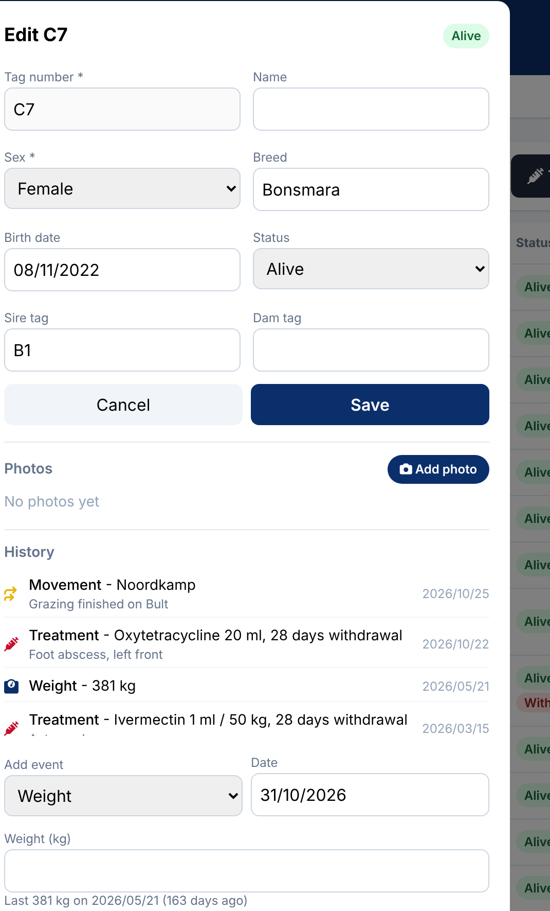

The field app is for whoever is out with the cattle. The herd is listed by camp in the farm's own order, each row with the animal's class, when it was last weighed, and its weight. Search by tag or name, or scan the tag.


Today or yesterday with one tap, or any past date. A weight shows the last one and the daily gain. A treatment remembers the farm's products and sets the withdrawal period, so the animal is flagged until the day it may be sold.




The dashboard counts the live herd by class and by camp, lists every animal overdue a weighing and every one still in withdrawal, and shows the latest events from every phone.




| Other animals | Sheep, goats, pigs, game or any other livestock: Kudde is set up for your animals with their own class names and rules. Speak to Plaashek about your situation. |
| Devices | Any Apple or Android phone for the field, a PC or phone for the office. Nothing to install from an app store. |
| Hosting and data | Your farm lives at yourfarm.plaashek.co.za on a South African hosting service, encrypted in transit and at rest, backed up daily, never shared between farms. |